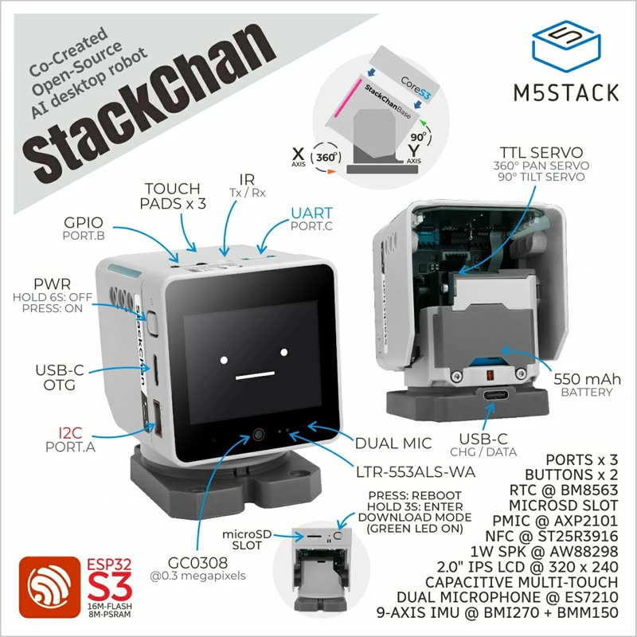

Works on its own
M5Stack StackChan (complete kit)
about US$ 99
Head (Core) and body (Body) assembled. It comes with the XiaoZhi AI agent preinstalled; you choose the agent in the StackChan World app.
- 2.0" screen with an animated face
- Camera, 2 microphones, 1 W speaker
- 2 motors: rotates 360° and tilts 90°
- 550 mAh battery, 2.4 GHz Wi-Fi
👍 Looks at the person and makes expressions.
👎 It doesn’t move. I haven’t confirmed whether you can switch the AI to your DeepSeek.
View the product ↗